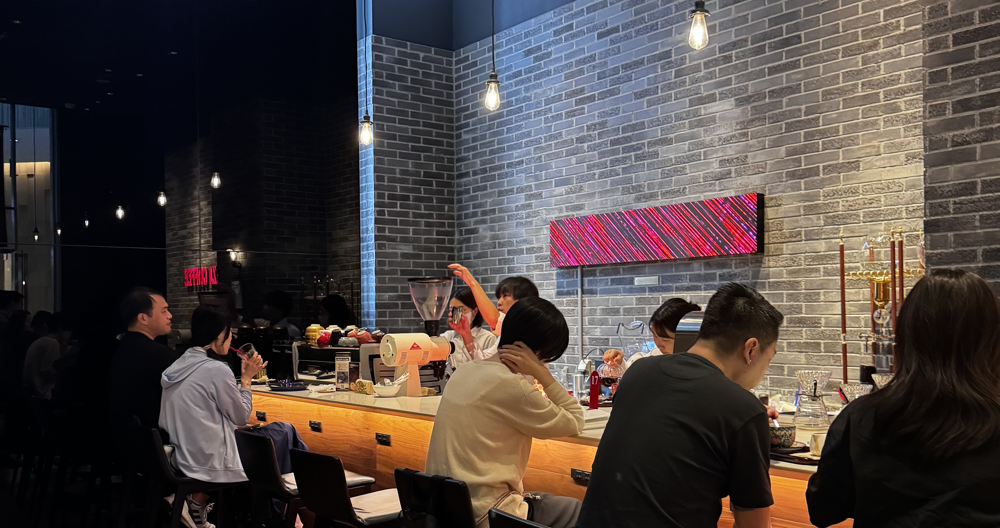
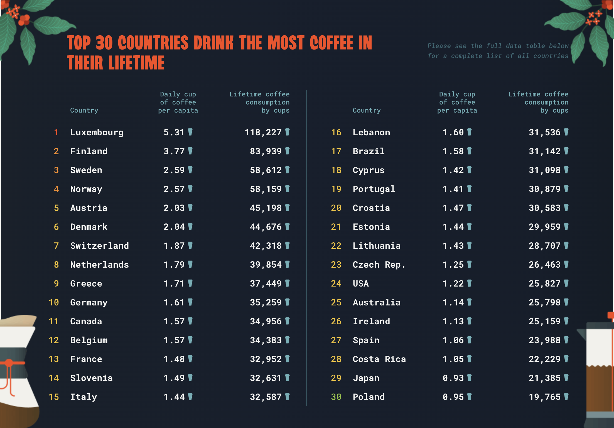
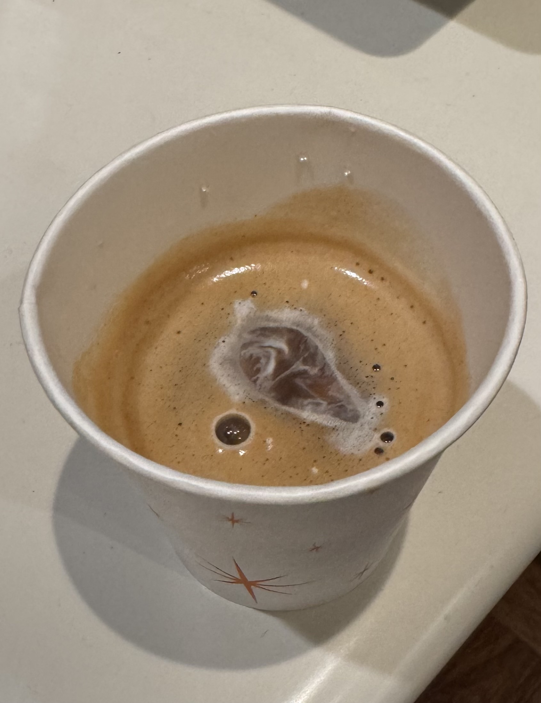

How do you enjoy coffee without seeming like a pretentious prick?
I’ve been nailing in my own conscience that the social perceptions of coffee brewing have been
limiting my
pursuit of brew. I’ve never conjured any coffee beyond a filter coffee, Keurig, or Moka Pot. What
inhibitions occupy my mind holding me back from my true potential as a home-barista? Is it the modern view
of the man who brews his own coffee? Is it the cost of the equipment or beans? Could it realistically just
be my laziness? Viewing myself as an avid drinker of coffee but not stepping past your everyday espresso or
latte seems to me like an oversight of huge proportions. Japan presents itself as a much-needed vessel to
dig deep and claw out the nails I’ve beaten in.
“Opportunity is a window to discover a new plane of existing.” - Me
Whether it be through my dad’s lessons or constant failure to accept change in my life, I’ve come to realize
and accept opportunity when it appears. Chris designed and presented the opportunity of “Walking in Japan”,
which I jumped at. Coffee became my subject of choice to frame my exploration of Japan and its deeply
ingrained cultures. Through the lens of my relationship to coffee and cafés, I’ve been navigating my life in
Tokyo and neighboring cities. Earning my right to do so through a couple of application essays, I uncover
how Tokyo and its people interact with coffee through its wonky café culture.
Part of my journey here is grappling with what ties me to coffee. It’s created deeply ingrained habits and
molded my lifestyle around it. I have not indulged in a proper breakfast in years, but every day I make sure
to have a coffee -- at work, after my first class, or at least any point before my first meal. Half my meals
in college come from an unnatural obsession to a local café I can’t let go of. I practically lived at Render
Coffee my second year in college with a regimented routine every morning: walk into Render, greet the
Barista, pay, sit down, enjoy my coffee and sandwich. Notice the lack of ordering anything. They knew
me
too well. The looming challenge of moving around as much as I have is... finding a new cafe to raid. These
cafés aren’t anything special. The coffee might be mediocre and the food, above average, but the idea of
consuming with the vibe of a comforting space while doing so excites me beyond a delectable coffee
would.
Am I obsessed with coffee or cafés? Maybe both or... maybe neither.
Masako Jazz and Coffee
Masako is THE spot for vibes and coffee. The curated selection of jazz and R&B music set up the perfect
atmosphere for head-down, intense writing sessions. Other than indulging in the uniquely satisfying red bean
toast, taking a break to listen in to the owner’s personal collection of records and her exceptional ability
to transition between tracks, is the best treat. She masterfully strings together songs, creating a vibe
unmatched. Beautiful sounds and beautiful tastes, all you need to enjoy your time here.
Western influence seeps into this cafe in a multitude of ways, the most obvious being the music choice
paying homage to one of the most influential genres. Chirping of the birds outside the window add the
occasional adlib to the soulful music playing inside. The paintings and shelves of records add to the jazzy
aesthetic. Gladly deviating from this place’s embrace of Western culture, the red bean toast bears a
distinct taste found commonly in Japanese sweets. The coffee, while not presenting anything unique, seems
purposeful as to contrast the sweetness of the toast and the blues.
Masako, a mainstay for me, embodies Western culture in the best way it can -- through its music. The appeal
of this cafe comes through its embrace of modernity from classic Western sounds, creating a robust
experience to enjoy, while holding true to its nature as a quaint spot in the small but bustling
neighborhood of Shimo-Kitzawa. For the first but surely not last time during this trip, a cafe instilled in
me a longing for personality in these places, a reason to drink the coffee, and keep coming back.
Berth Coffee
Berth provides little but ambiance and free wifi. Journaling here was the closest I’ve felt to home when
thinking about my typical cafe experience -- mediocre food and drink with a respectable vibe for socializing
and working.
The café mocha had a recognizably average flavor profile with a strong cocoa flavor, masking the taste of
coffee. The prepackaged sandwich did not help Berth’s case either. The sandwich was chalky and lacked any
resemblance to a sandwich in a way that even a 7-11 variety could. The drink or food here definitely weren’t
the main draw.
The lower level of the cafe fulfills the aesthetic this place seeks to bring. The bar, stretching across the
back of the space, lures you to have a drink and neglect the work you came here to do. The generous amount
of table space and sofa seating create a comfortable environment, but the people clamoring at the bar throw
off your motivation to grind a tad. The warm light coming from small bulbs and lamps scattered across
illuminate the area, helping settle you back in to a familiar-feeling space. On the larger end of cafés in
the city, Berth is an easy choice for anyone wanting to relax in a cozy space, stay productive at a large
table, or have an alcoholic drink at a (probably) high price.
Berth’s appeal feels like the closest thing to an American café, but is seemingly an imitation of Western
café culture rather than an adoption of it. Tied to the hostel above, its main customer base would be the
American and European travelers looking for a recognizable atmosphere to spend their mornings in Tokyo. In
contrast to Masako, which proudly embraces one the best parts of the Western culture, its music, Berth puts
on a facade of the West’s same-y café culture. Berth doesn’t fit right into the neighborhood like Masako
did, nor does it bring a distinct experience; it brings familiarity. These cafés, after all, serve different
purposes to different audiences, the type looking to explore the notability in an ever-transforming Tokyo
and those seeking their evident modern Western influence.
Doutor Coffee
As my first experience drinking coffee in Japan, this became my expectation for café culture here. Simply,
places to grab a cheap coffee and rows of seating for a productive time. My friend brought me here, knowing
my quest to experience coffee culture in Japan. At least that’s what I thought until she revealed she had
been eyeing it for its indoor smoking space.
The easiest comparison to make for Doutor is Starbucks for its “fast food” style of experience. It felt;
however, even more streamlined of an experience, getting our cheap-tasting coffee in a couple minutes and
leaving the café in a few more. Doutor bared no personality or charm of sorts, relying on its inexpensive
and fast experience as its primary grab. This place boasted a large variety of food and drink options but
all a variation of standard café items in Japan.
This style of chain café, Doutor in particular, attracts a specific crowd consisting of “salarymen” and
students. Accentuating this is the presence of a smoking room on the upper floor. An American café of any
style just would not have this facility. This addition can only be described as a smart business decision
because of the ban on outdoor smoking in Japan. Open late, they would be the perfect spot for a
working-class person or student to spend their free time in the day. Doutor draws in this targeted but huge
audience that rely on places akin to this to unwind after work or school, get productive in
later-than-normal hours, and ultimately enjoy a cheap coffee.
Cafés like this one perpetuate Japan’s rigorous work culture that is apparent to anyone staying in Japan for
even the shortest trip. Rows of seats with plenty of outlets and cubicle-like table space cover the majority
of the main floor. To all intents and purposes, a place to harness productivity, Doutor possesses no
personality or “vibe” but provides a space for those seeking what it offers -- cheap coffee and space to
work.
Boss Coffee
Vending machine coffee -- the most efficient source of coffee in the city. Most would agree. Boss gives me
that mid-day boost to keep going. During a break in lecture, before an intense writing session, or just to
perpetuate my addiction, Boss’ selection of canned and bottled drinks found in vending machines and konbinis
are the perfect pick-me-ups for any day.
Boss has ingrained itself alongside Tully’s and Georgia in Japan as the go-to to-go coffee. The coffee they
serve tastes no different than what you’d imagine coffee to taste like with mild variations in milk or
sugar. Drinking the coffee, I let go of these inhibitions, accepting this coffee to just be coffee; to exist
for no reason; experience or flavor -- simply fuel.
The lack of choice and blandness across varieties positions Boss to leverage the demanding work culture and
reliance on convenience in Japan. Their apparent monopolization of this massive market for convenient coffee
displays Japan’s corporate incentive to propagate Japan’s ever-growing modernization.
Boss represents the harsh reality of corporatization of Japan’s modernity, suckling us with convenient
indistinguishable coffee. Ignoring this truth, we enjoy the beverage for what it hopes to be. The experience
of this coffee isn’t inherent but emerges from the setting you choose to indulge in this coffee. The ability
to carry this experience anyplace you venture reveals its modern beauty.
Cat Café Mocha
The first and only animal cafe I went to in my time here, as popular as they are. A quaint cat cafe, this
place honed in on an interactive animal experience as opposed to coffee. We walked in expecting to sip
tasteful coffee and pet a couple furry fellows. Surprisingly, they offered only a few coffee options but a
whole variety of other beverages dispensed from a vending machine (of course). For a 30 minute session at a
set price, we were allowed to interact with sleepy cats and drink coffee out of tiny paper cups.
With questionable ethics, these kinds of cafés dispense “kawaii” experiences to tourists willing to spend
their time and money on an underwhelming time. The more popular of these cafés participate in more shady
business models, and shill off time with more exotic animals like otters or “mini-pigs”. These places are
not cafés in my eyes. They function as tourist traps and solely amusement attractions. They don’t care about
these animals, the coffee, the food, or you. They care about your money. A café more in name than actuality.
This “take” on cafés reveals an underside of the modernity in café culture in Tokyo, built on tourism. The
difference between these animal “cafés” and Western cafés couldn’t be less apparent. Those I’m used to sell
coffee or even productivity, but these advertise neither. Their draw is a novel experience. Japan’s unique
evolution of the idea of a coffee experience takes form with jazz ambiance, traditional Japanese flavors,
hyper-convenience, or even these animal experiences. This animal café was my first experience witnessing a
divergence from the mere imitation of Western culture but still appealing to a majority Western audience of
tourists. Not my cup of coffee but a notable twist on the concept of a café.
Hatameki
“The fun stuff comes when someone is not so strict on sticking to the script. You're allowed the
spontaneity, and great moments can happen.” - Jennifer Aniston
Something I’ve never been a fan of is spontaneity. I meticulously plan, I research, I gather opinions, I
decide. Jenny is right though.
Wandering around Kiyosumi after a chill discussion of The Factory at Kiyosumi Park, I was after a coffee
shop I had planned to visit, KOFFEE Mameya. Known for their Omakase style of serving a tasting set of
coffees, it was to be my first experience in Japan drinking specialty coffee. I guess I hadn’t planned
enough because they were only taking reservations that day. Disappointed, I reflected on what I was here in
Japan to do -- walk and drink coffee. I decided to embrace what little spontaneity I had lingering in me and
wander the streets of this quiet neighborhood for a cozy coffee shop to cheer me up from my utter failure.
After merely looking at the nearby Blue Bottle and noticing its obnoxiously long line I walked away but
inspired to keep on my quest. Hatameki lured me with its delicious looking curry and rice to accompany an
afternoon iced coffee. This would be my redemption. Seeing familiar faces from the program, I walked in,
looking forward to good food, coffee with friends, and a little productivity; what cafés are made for.
I was not disappointed -- the cardamom coffee was exactly what I needed to rejuvenate my spirit. It carried
a certain kick that added to the bitterness of the coffee. The curry and rice complimented the spice of
coffee, reminding me of my mom’s food paired with a spiced chai.
Socializing with friends took place of productivity but the proximity to the Kiyosumi Gardens proved to be
our friend. We all set out to explore this garden and reflect in a beautiful space. While the “grind” wasn’t
my primary focus here or at Hatamaki, the atmosphere suited that vibe too.
Saza Coffee
Not the spot to stop by on a whim. After exploring the Imperial Palace Gardens, a group of my friends and I
hunted for Saza, itching for a break at a typical coffee shop in our busy day. Astonished by the immediate
advertisement of a 5000 yen Panama Geisha coffee, my friends made a business decision to check out the
neighboring Tully’s instead. Awe-struck, I yearned to learn more.

Saza was a specialty brewer of Geisha coffee and a top-rated roaster of the Panama Geisha variety. These
beans are harvested from January to April at around 1500 meters above sea level in the Chiriquí province of
western Panama; a rare and highly sought-after coffee. The mere presence of this roast set the tone for Saza
as a specialty coffee maker as opposed to a café.
The place might seem intimidating at first, but the staff are lovely and explain each roast on the menu in
explicit detail -- just ask. “Geisha” coffee, a variety of coffee tree originating from Ethiopia’s Gori
Gesha forest, sounded appealing but scared my feeble palette. I needed to come back and do this shop justice
by enjoying this novel experience, but for now I settled for their Ethiopia Mocha. This staff recommendation
to-go carried a rich flavor with a bitterness more reminiscent of a strong dark chocolate rather than your
typical espresso. Sourced from Ethiopia, this brew along with their various Geisha coffees payed homage to
the birthplace of coffee. The strong but sweet aftertaste left me wanting more.
Representative of Japan’s adoption of coffee culture, Saza’s imported flavors respect where they came from
through their excellent preparation of these roasts. Come here to enjoy intense flavors and aromas. Come
here to indulge in specialty roasts imported from across the World. Come here to find yourself wanting more
coffee.
CAFÉ Tarot
The closeness to our class building serves Tarot well, keeping a handful of my friends and I coming
back. Vegan food, especially a café would expectedly uncharge (a concept we’ve all come to understand). The
falling strength of the yen counteracted this phenomenon. I had done the impossible and found cheap vegan
food... relative to American prices.
The ambiance of this cafe felt purposeful and designed to interact with the theme its namesake, tarot. With
tarot cards available, tarot themed coasters, and a friend of mine to do a tarot reading for me, Café Tarot
provided a unique spin on a solid café experience. The food was vegan but tasty. The salted caramel latte
was indistinguishable from its non-vegan counterpart and held a non-overpowering caramel taste.
Café Tarot was a culmination of my mind’s ideal café. Solid food, space to work, inviting ambiance,
proximity to a familiar place, and tasteful coffee. Japan’s culture of including meat in every meal sets up
Tarot as a staple for those who might want to deviate from that norm. It embraces this Western take on food
and its modern aesthetic, revolving around a tarot cards. Café Tarot fulfills a niche in the café culture
and my weekly routine.
Byron Bay Coffee Company
Byron Bay is one of those few cafes with phenomenal food but lackluster coffee. Their donuts and sandwiches
come at a fair price but are well worth while their honey latter was on the milky side and lacking the taste
of... honey, resulting in a drink resembling your everyday café latte -- nothing special. At least it paired
well with their glazed donut.
The setting here, similar to Berth and Tarot, gives ample room to work on your choice of couches or tables.
Unlike those two, Byron Bay doesn’t lean into the socializing aspect commonly found in Cafés. Promoting
productivity with low-fi music and a free but strong wifi connection, it’s a haven for “getting shit done”.
Evidently, the placement in a “startup workspace”, 31 Ventures, fosters that mindset. More reminiscent of an
American café of this type than a place like Doutor, Byron Bay presents itself as another location to lock
in with relaxing ambiance.
Scratch that. “Relaxing" ambiance sometimes depending on which employee is on aux. A mid-day swap of
employees occurs and the vibe of the place changes with it. The low-fi becomes American rap/hip-hop and pop.
The chatter of people socializing replaces the quiet sounds of writing and keyboard tapping. A café where
the atmosphere adapts to the time of day and matches the moods of the people in it. I’m not sure if the
music sets the atmosphere or reacts to it. Does this social environment come alive with the shift in music
or does it fashion the music change? A modern café has its secrets.
Fuglen Asakusa
Einer Holk, the owner of Fuglen, infused this chain of Nordic-inspired cafes, serving specialty roasts and
baked goods, with his passion for creating coffee. Holk’s achievement as Norwegian Barista Champion 2007
catapulted him to fame (I like to think). Leveraging his skills as a barista, he set up Fuglen locations in
Tokyo and Oslo.

Other than the Netherlands, the Nordic countries of Finland, Sweden, and Norway consistently appear in top
spots on yearly statistics for coffee consumption per capita. They know how to drink coffee right. I hope
they know how to make it. Fuglen, representing this culture, boasts itself as one of the best coffee chains
in Tokyo.
Fuglen holds up to its name and background with the coffee I tried. The El Martillo SL-28 / El Salvador
Fuglen Iced Coffee, a version of their house iced coffee, brought with it strong notes of citrus and berry.
El Salvador’s huge production of oranges and berries are apparent in its flavor profile. Fuglen delighted me
with this tasteful brew of coffee, bringing out all its notes and imparting on me a new love for specialty
coffee. While many cafés in Japan stick to creamy espresso drinks, few like Saza and Fuglen serve delectable
coffees without milk or sugar. They rely on the skills of their baristas to bring out the flavors imbued in
their beans, creating a unique coffee reminiscent of the regions they originate from. Saza’s Ethiopia Mocha
presented a potent chocolate-like bitterness to hang on to. Fuglen’s El Salvador Iced Coffee carried a
sweetness that leaves me craving more. These experiences with specialty coffee in Japan left a (hopefully)
lasting partiality for these unaccompanied roasts. Fuglen stays a staple in Japan’s coffee culture, imbuing
it with the exquisite brewing ability from the Nordic regions.
Ueshima Coffee Shop
On the second day of our class trip to Nikko at the Toshogu shrine, I ran into Kevin outside a gift shop. I
found myself perplexed at Kevin’s recommendation to try the “orange milk coffee” at the shrine’s cafe,
Ueshima. He’s a strange guy but his magic works in mysterious ways. I took a chance and trusted his
judgment.
The coffee fulfilled its aesthetic *and* tasted good -- a rare find in the coffee world. A unique orange
flavored coffee, employing this citric fruit to add a piece of traditional Japan into this coffee. Served at
shrine, it makes perfect sense. Where else could be better than a shrine cafe to include a fruit,
traditionally a symbol for good luck and fortune, in a coffee? The orange is an interesting homage to a
traditionally lucky fruit in juxtaposition with this modern drink of Japan. Visiting shrines all over Japan,
I’ve felt as though I’m slowly adding to my good fortune. This coffee takes it one step further for me.
This coffee is one way Japan has contributed to coffee culture, imbuing it with its traditional roots,
adding a new flavor to this already potent beverage. It works in balancing its own profile with the
tanginess of the orange, the bitterness of the coffee, and the creaminess of the milk. Anyone could add an
orange flavor to a coffee, but this presentation of that embodies Japan’s careful, balanced ways of
preserving tradition in a rapidly Westernizing Japan.
I’ll have to thank Kevin for yet another superb suggestion.
Coffee Stand OZ
This hole-in-the-wall coffee shop represents the vibe of the Shirakawa and Miyoshi, Koto City area it
resides in. As a quaint but lively town in a hectic Tokyo, this group of little neighborhoods is chock-full
of bikes, families, and elderly people, giving the area a close-knit community feel. No cars in sight!
Similar to many suburbs around Tokyo, this area transports you to a world within a world where you can
forget about the hustle and bustle of the largest city in the world.
OZ encapsulates the simple, cozy atmosphere in its unobtrusive aesthetic. An easy to miss shop, it fits
snugly into a small alleyway between homes. The owner and employee accentuated the friendly vibes in
conversation with them. I spoke with them about my time here in Japan, sipping on an iced latte. We talked
for 15 to 20 minutes that felt like hours about coffee and living in Japan. The familiarity in their voices
and natural tone made me feel like a part of the community.
My coffee had disappeared before I’d even paid for it. The black sesame flavor, popular for desserts in
Japan, blended with the bitterness of the espresso, adding an earthiness to the iced coffee. This uniquely
Japanese taste was nutty and sweet but left me refreshed, craving the donut a fellow customer convinced me
to buy.
Even without any official seating at this spot I stayed and chatted. I’m not sure if it was the coffee, the
employees, or the cute cat napping on the counter. This place solidified Shirakawa and Miyoshi as my
favorite group of neighborhoods in Tokyo.
Marufuku Cofee Shop
After a tiring 6 am Shinkansen train to Osaka, Marufuku’s fluffy pancakes and specialty coffee jelly brought
my spirit back to life and ready to take the day on. I questioned whether the 6 am train was worth taking to
beat a supposed rush I didn’t see once arriving. The streets were empty outside the station at 8:30 am. We
walked around, frustrated to see restaurants not open yet. Stumbling upon the only spot open that early, we
were relieved to see the signage for Marufuku.
Coffee jelly conveys Japan’s transformation of a Western culture it initially adopted. It’s yet another
example of an elevated coffee experience. This unique spin on coffee is both fulfilling in taste and
texture. Adding a new layer to coffee, involving a new sense, demonstrates Japan’s dedication to modern
innovation in a way that enhances its subject without feeling like a gimmick. One of my new favorite ways to
enjoy coffee, I’ll (attempt to) recreate it back home.
Leaving the restaurant, we noticed a line around the corner. The early train was worth it and the people
queuing up for Marufuku proved it. Marufuku embodied Osaka’s namesake as the kitchen of japan. Its offerings
of Osaka’s famous pancakes and coffee jelly in a traditional diner setting proved Osaka’s notoriety for its
staple delicacies.
Tadka
Not a coffee shop or café, but a restaurant in Kyoto, known for its authentic South Indian food. You can
expect a refreshing experience enjoying authentic food and coffee. The owner and his team inaugurated this
restaurant in 2012 and make recurring trips to Chennai to re-engineer their recipes and remain true to the
culture.
In the heart of Kyoto, this restaurant teleported me back to my grandmother’s house. We planned to come here
after visiting a few shrines in the east of Kyoto. We didn’t plan on having one of the best meals of the
trip. I scarfed down the rich and hearty meal in front of me. I was full in the few minutes it took me to
finish my food while still feeling light and leaving room for a nostalgic coffee.
This Japanese restaurant’s South Indian coffee or Kaapi unmistakably resembles a filter coffee my
grandfather would make me. Drinking just a cup of it rejuvenated me for the rest of a toiling day around
Kyoto. The mastery and dedication to achieve an authentic food experience persists in the coffee. They
source their beans from South India and extract using a brass extractor, replicating the exact taste. In
South India, you might stop for a cup at a coffee stand to see people gathering, sipping coffee,
daydreaming. Their outdoor coffee counter hopes to recreate this beautiful scene outside their small Kyoto
restaurant.
ROAR Coffee Roasters
I was getting burnt out of grinding at cafés. To escape that monotony, I spent the day at Honnomori-Chuo
Library on their balcony seating with Kevin. The sunny weather with a slight breeze couldn’t go to waste
staring at my laptop, trying to get words down for my project. To feel a semblance of productivity, I spent
my time reading The Factory for my reading group.
I stepped out of the library to take a break from a mundane reading session. Eyeing ROAR for its latte art,
I headed there with Kevin tagging along. He doesn’t drink coffee but he’s always down to do what needs to be
done to get out of work. I was pleasantly surprised with the customization they offered in simply the look
of the coffee. After contemplating a while, I landed on a charcoal latte with rainbow art. Kevin passed on
the opportunity to join me as expected.
Digging the contrast of colorful art on jet black coffee, I sipped my drink, as we made our way back to the
library. That was a satisfying buy but the coffee was nothing special beyond the aesthetic. The charcoal
washed out the bitterness of the blend I had chosen with an earthy flavor in its place. It was good but not
great.
While chatting to Kevin about how I did not want to lock back in, he let out a little chuckle. Is my sorrow
funny to you? No, what was funny; however, was my tongue turned a deep black color from the charcoal coffee.
My lips tinted black too, I can’t believe he had let me talk for even that long before letting me know I
looked like a freak.
ROAR creates a unique (and kind of embarrassing) experience. For a decent cup of coffee with the modern
flare of food coloring and a latte art machine, it’s a worthwhile time.
teamLab Borderless En Tea House
Edging out teamLab Planets by a slim margin as my favorite of the two, teamLab Borderless presented a
distinct interactive art gallery that kept you amazed as you wandered around looking for new rooms to blow
your mind away. You might stumble into a room that you enjoy and come back to that same room 20 minutes
later to experience a unique new piece in that same place. One of the special few rooms that remained
stagnant but served up an amazing experience was En Tea House.
Considering this place provides tea and not coffee, my inclusion of it should highlight how awesome it was.
I experienced it alone once and went back another time to drag my friends along. It’s a must see at
Borderless. For 600 yen you can choose a hot or iced tea of your choice, but they don’t hand you a cup of
tea. You receive a small container of tea leaves, which you hand to an employee inside a dark dining hall.
They return after a short while with a bowl of tea.
A flower blooms in your bowl, emerging out of nothing. You lift your bowl to take a sip and see the flower,
now on the table. Its petals scatter outside the confines of the tea. A new flower grows in its place, as
you set the bowl down, ready to disappear when you take your next sip. Life and death in front of you. An
infinitely expanding world inside your bowl of tea.
A brilliant bowl of tea that strays from all traditional methods to deliver a surreal experience. Tradition
lies in the tea under a veil of beautiful modern art.
Comfort Hotel Café
The dreaded last day of the program had arrived sooner than later. One last night out and an early morning
of sweet but solemn goodbyes to friends I know I’ll see soon left me drained. Fortunately, my stay in Japan
was to be prolonged by another week with the arrival of my parents. It won’t be the same without
Rattlesnake’s endless wisdom or witty humor. I’m going to miss the interesting characters this program was
full of.

I forced myself down to the hotel café where I stood drinking a tasteless cup of coffee from a tiny paper
cup. The hotel coffee was meaningless compared to the rich conversations I had there with a few friends.
Rattlesnake imparted a last few words of advice and wrapped up our time here in a bitter-sweet fashion. His
brew of words left me longing for more time I didn’t have with everyone else. The steam was lifted and
revealed the lasting echos of this trip. The essence everyone brought to our adventures imbue my conscience
with flavors I’d never expect of myself. The jazzy notes I tasted at live music bars. The grind of thrifting
across bustling Tokyo districts. The potent aromas of blooming flowers in huge gardens. I had lived it all.
Speaking to the few friends remaining resurfaced these memories. They sat on the top of my conscience as art
to be stared at forever.
 Masako is THE spot for vibes and coffee. The curated selection of jazz and R&B music set up the perfect
atmosphere for head-down, intense writing sessions. Other than indulging in the uniquely satisfying red bean
toast, taking a break to listen in to the owner’s personal collection of records and her exceptional ability
to transition between tracks, is the best treat. She masterfully strings together songs, creating a vibe
unmatched. Beautiful sounds and beautiful tastes, all you need to enjoy your time here.
Masako is THE spot for vibes and coffee. The curated selection of jazz and R&B music set up the perfect
atmosphere for head-down, intense writing sessions. Other than indulging in the uniquely satisfying red bean
toast, taking a break to listen in to the owner’s personal collection of records and her exceptional ability
to transition between tracks, is the best treat. She masterfully strings together songs, creating a vibe
unmatched. Beautiful sounds and beautiful tastes, all you need to enjoy your time here. Masako, a mainstay for me, embodies Western culture in the best way it can -- through its music. The appeal
of this cafe comes through its embrace of modernity from classic Western sounds, creating a robust
experience to enjoy, while holding true to its nature as a quaint spot in the small but bustling
neighborhood of Shimo-Kitzawa. For the first but surely not last time during this trip, a cafe instilled in
me a longing for personality in these places, a reason to drink the coffee, and keep coming back.
Masako, a mainstay for me, embodies Western culture in the best way it can -- through its music. The appeal
of this cafe comes through its embrace of modernity from classic Western sounds, creating a robust
experience to enjoy, while holding true to its nature as a quaint spot in the small but bustling
neighborhood of Shimo-Kitzawa. For the first but surely not last time during this trip, a cafe instilled in
me a longing for personality in these places, a reason to drink the coffee, and keep coming back.
 The café mocha had a recognizably average flavor profile with a strong cocoa flavor, masking the taste of
coffee. The prepackaged sandwich did not help Berth’s case either. The sandwich was chalky and lacked any
resemblance to a sandwich in a way that even a 7-11 variety could. The drink or food here definitely weren’t
the main draw.
The café mocha had a recognizably average flavor profile with a strong cocoa flavor, masking the taste of
coffee. The prepackaged sandwich did not help Berth’s case either. The sandwich was chalky and lacked any
resemblance to a sandwich in a way that even a 7-11 variety could. The drink or food here definitely weren’t
the main draw. The lower level of the cafe fulfills the aesthetic this place seeks to bring. The bar, stretching across the
back of the space, lures you to have a drink and neglect the work you came here to do. The generous amount
of table space and sofa seating create a comfortable environment, but the people clamoring at the bar throw
off your motivation to grind a tad. The warm light coming from small bulbs and lamps scattered across
illuminate the area, helping settle you back in to a familiar-feeling space. On the larger end of cafés in
the city, Berth is an easy choice for anyone wanting to relax in a cozy space, stay productive at a large
table, or have an alcoholic drink at a (probably) high price.
The lower level of the cafe fulfills the aesthetic this place seeks to bring. The bar, stretching across the
back of the space, lures you to have a drink and neglect the work you came here to do. The generous amount
of table space and sofa seating create a comfortable environment, but the people clamoring at the bar throw
off your motivation to grind a tad. The warm light coming from small bulbs and lamps scattered across
illuminate the area, helping settle you back in to a familiar-feeling space. On the larger end of cafés in
the city, Berth is an easy choice for anyone wanting to relax in a cozy space, stay productive at a large
table, or have an alcoholic drink at a (probably) high price. As my first experience drinking coffee in Japan, this became my expectation for café culture here. Simply,
places to grab a cheap coffee and rows of seating for a productive time. My friend brought me here, knowing
my quest to experience coffee culture in Japan. At least that’s what I thought until she revealed she had
been eyeing it for its indoor smoking space.
As my first experience drinking coffee in Japan, this became my expectation for café culture here. Simply,
places to grab a cheap coffee and rows of seating for a productive time. My friend brought me here, knowing
my quest to experience coffee culture in Japan. At least that’s what I thought until she revealed she had
been eyeing it for its indoor smoking space.
 This style of chain café, Doutor in particular, attracts a specific crowd consisting of “salarymen” and
students. Accentuating this is the presence of a smoking room on the upper floor. An American café of any
style just would not have this facility. This addition can only be described as a smart business decision
because of the ban on outdoor smoking in Japan. Open late, they would be the perfect spot for a
working-class person or student to spend their free time in the day. Doutor draws in this targeted but huge
audience that rely on places akin to this to unwind after work or school, get productive in
later-than-normal hours, and ultimately enjoy a cheap coffee.
This style of chain café, Doutor in particular, attracts a specific crowd consisting of “salarymen” and
students. Accentuating this is the presence of a smoking room on the upper floor. An American café of any
style just would not have this facility. This addition can only be described as a smart business decision
because of the ban on outdoor smoking in Japan. Open late, they would be the perfect spot for a
working-class person or student to spend their free time in the day. Doutor draws in this targeted but huge
audience that rely on places akin to this to unwind after work or school, get productive in
later-than-normal hours, and ultimately enjoy a cheap coffee.


 With questionable ethics, these kinds of cafés dispense “kawaii” experiences to tourists willing to spend
their time and money on an underwhelming time. The more popular of these cafés participate in more shady
business models, and shill off time with more exotic animals like otters or “mini-pigs”. These places are
not cafés in my eyes. They function as tourist traps and solely amusement attractions. They don’t care about
these animals, the coffee, the food, or you. They care about your money. A café more in name than actuality.
With questionable ethics, these kinds of cafés dispense “kawaii” experiences to tourists willing to spend
their time and money on an underwhelming time. The more popular of these cafés participate in more shady
business models, and shill off time with more exotic animals like otters or “mini-pigs”. These places are
not cafés in my eyes. They function as tourist traps and solely amusement attractions. They don’t care about
these animals, the coffee, the food, or you. They care about your money. A café more in name than actuality.
 “The fun stuff comes when someone is not so strict on sticking to the script. You're allowed the
spontaneity, and great moments can happen.” - Jennifer Aniston
“The fun stuff comes when someone is not so strict on sticking to the script. You're allowed the
spontaneity, and great moments can happen.” - Jennifer Aniston
 I was not disappointed -- the cardamom coffee was exactly what I needed to rejuvenate my spirit. It carried
a certain kick that added to the bitterness of the coffee. The curry and rice complimented the spice of
coffee, reminding me of my mom’s food paired with a spiced chai.
I was not disappointed -- the cardamom coffee was exactly what I needed to rejuvenate my spirit. It carried
a certain kick that added to the bitterness of the coffee. The curry and rice complimented the spice of
coffee, reminding me of my mom’s food paired with a spiced chai.
 The place might seem intimidating at first, but the staff are lovely and explain each roast on the menu in
explicit detail -- just ask. “Geisha” coffee, a variety of coffee tree originating from Ethiopia’s Gori
Gesha forest, sounded appealing but scared my feeble palette. I needed to come back and do this shop justice
by enjoying this novel experience, but for now I settled for their Ethiopia Mocha. This staff recommendation
to-go carried a rich flavor with a bitterness more reminiscent of a strong dark chocolate rather than your
typical espresso. Sourced from Ethiopia, this brew along with their various Geisha coffees payed homage to
the birthplace of coffee. The strong but sweet aftertaste left me wanting more.
The place might seem intimidating at first, but the staff are lovely and explain each roast on the menu in
explicit detail -- just ask. “Geisha” coffee, a variety of coffee tree originating from Ethiopia’s Gori
Gesha forest, sounded appealing but scared my feeble palette. I needed to come back and do this shop justice
by enjoying this novel experience, but for now I settled for their Ethiopia Mocha. This staff recommendation
to-go carried a rich flavor with a bitterness more reminiscent of a strong dark chocolate rather than your
typical espresso. Sourced from Ethiopia, this brew along with their various Geisha coffees payed homage to
the birthplace of coffee. The strong but sweet aftertaste left me wanting more.


 Byron Bay is one of those few cafes with phenomenal food but lackluster coffee. Their donuts and sandwiches
come at a fair price but are well worth while their honey latter was on the milky side and lacking the taste
of... honey, resulting in a drink resembling your everyday café latte -- nothing special. At least it paired
well with their glazed donut.
Byron Bay is one of those few cafes with phenomenal food but lackluster coffee. Their donuts and sandwiches
come at a fair price but are well worth while their honey latter was on the milky side and lacking the taste
of... honey, resulting in a drink resembling your everyday café latte -- nothing special. At least it paired
well with their glazed donut.

 Fuglen holds up to its name and background with the coffee I tried. The El Martillo SL-28 / El Salvador
Fuglen Iced Coffee, a version of their house iced coffee, brought with it strong notes of citrus and berry.
El Salvador’s huge production of oranges and berries are apparent in its flavor profile. Fuglen delighted me
with this tasteful brew of coffee, bringing out all its notes and imparting on me a new love for specialty
coffee. While many cafés in Japan stick to creamy espresso drinks, few like Saza and Fuglen serve delectable
coffees without milk or sugar. They rely on the skills of their baristas to bring out the flavors imbued in
their beans, creating a unique coffee reminiscent of the regions they originate from. Saza’s Ethiopia Mocha
presented a potent chocolate-like bitterness to hang on to. Fuglen’s El Salvador Iced Coffee carried a
sweetness that leaves me craving more. These experiences with specialty coffee in Japan left a (hopefully)
lasting partiality for these unaccompanied roasts. Fuglen stays a staple in Japan’s coffee culture, imbuing
it with the exquisite brewing ability from the Nordic regions.
Fuglen holds up to its name and background with the coffee I tried. The El Martillo SL-28 / El Salvador
Fuglen Iced Coffee, a version of their house iced coffee, brought with it strong notes of citrus and berry.
El Salvador’s huge production of oranges and berries are apparent in its flavor profile. Fuglen delighted me
with this tasteful brew of coffee, bringing out all its notes and imparting on me a new love for specialty
coffee. While many cafés in Japan stick to creamy espresso drinks, few like Saza and Fuglen serve delectable
coffees without milk or sugar. They rely on the skills of their baristas to bring out the flavors imbued in
their beans, creating a unique coffee reminiscent of the regions they originate from. Saza’s Ethiopia Mocha
presented a potent chocolate-like bitterness to hang on to. Fuglen’s El Salvador Iced Coffee carried a
sweetness that leaves me craving more. These experiences with specialty coffee in Japan left a (hopefully)
lasting partiality for these unaccompanied roasts. Fuglen stays a staple in Japan’s coffee culture, imbuing
it with the exquisite brewing ability from the Nordic regions.
 This hole-in-the-wall coffee shop represents the vibe of the Shirakawa and Miyoshi, Koto City area it
resides in. As a quaint but lively town in a hectic Tokyo, this group of little neighborhoods is chock-full
of bikes, families, and elderly people, giving the area a close-knit community feel. No cars in sight!
Similar to many suburbs around Tokyo, this area transports you to a world within a world where you can
forget about the hustle and bustle of the largest city in the world.
This hole-in-the-wall coffee shop represents the vibe of the Shirakawa and Miyoshi, Koto City area it
resides in. As a quaint but lively town in a hectic Tokyo, this group of little neighborhoods is chock-full
of bikes, families, and elderly people, giving the area a close-knit community feel. No cars in sight!
Similar to many suburbs around Tokyo, this area transports you to a world within a world where you can
forget about the hustle and bustle of the largest city in the world.

 After a tiring 6 am Shinkansen train to Osaka, Marufuku’s fluffy pancakes and specialty coffee jelly brought
my spirit back to life and ready to take the day on. I questioned whether the 6 am train was worth taking to
beat a supposed rush I didn’t see once arriving. The streets were empty outside the station at 8:30 am. We
walked around, frustrated to see restaurants not open yet. Stumbling upon the only spot open that early, we
were relieved to see the signage for Marufuku.
After a tiring 6 am Shinkansen train to Osaka, Marufuku’s fluffy pancakes and specialty coffee jelly brought
my spirit back to life and ready to take the day on. I questioned whether the 6 am train was worth taking to
beat a supposed rush I didn’t see once arriving. The streets were empty outside the station at 8:30 am. We
walked around, frustrated to see restaurants not open yet. Stumbling upon the only spot open that early, we
were relieved to see the signage for Marufuku.

 Not a coffee shop or café, but a restaurant in Kyoto, known for its authentic South Indian food. You can
expect a refreshing experience enjoying authentic food and coffee. The owner and his team inaugurated this
restaurant in 2012 and make recurring trips to Chennai to re-engineer their recipes and remain true to the
culture.
Not a coffee shop or café, but a restaurant in Kyoto, known for its authentic South Indian food. You can
expect a refreshing experience enjoying authentic food and coffee. The owner and his team inaugurated this
restaurant in 2012 and make recurring trips to Chennai to re-engineer their recipes and remain true to the
culture.

 I was getting burnt out of grinding at cafés. To escape that monotony, I spent the day at Honnomori-Chuo
Library on their balcony seating with Kevin. The sunny weather with a slight breeze couldn’t go to waste
staring at my laptop, trying to get words down for my project. To feel a semblance of productivity, I spent
my time reading The Factory for my reading group.
I was getting burnt out of grinding at cafés. To escape that monotony, I spent the day at Honnomori-Chuo
Library on their balcony seating with Kevin. The sunny weather with a slight breeze couldn’t go to waste
staring at my laptop, trying to get words down for my project. To feel a semblance of productivity, I spent
my time reading The Factory for my reading group.

 Edging out teamLab Planets by a slim margin as my favorite of the two, teamLab Borderless presented a
distinct interactive art gallery that kept you amazed as you wandered around looking for new rooms to blow
your mind away. You might stumble into a room that you enjoy and come back to that same room 20 minutes
later to experience a unique new piece in that same place. One of the special few rooms that remained
stagnant but served up an amazing experience was En Tea House.
Edging out teamLab Planets by a slim margin as my favorite of the two, teamLab Borderless presented a
distinct interactive art gallery that kept you amazed as you wandered around looking for new rooms to blow
your mind away. You might stumble into a room that you enjoy and come back to that same room 20 minutes
later to experience a unique new piece in that same place. One of the special few rooms that remained
stagnant but served up an amazing experience was En Tea House.